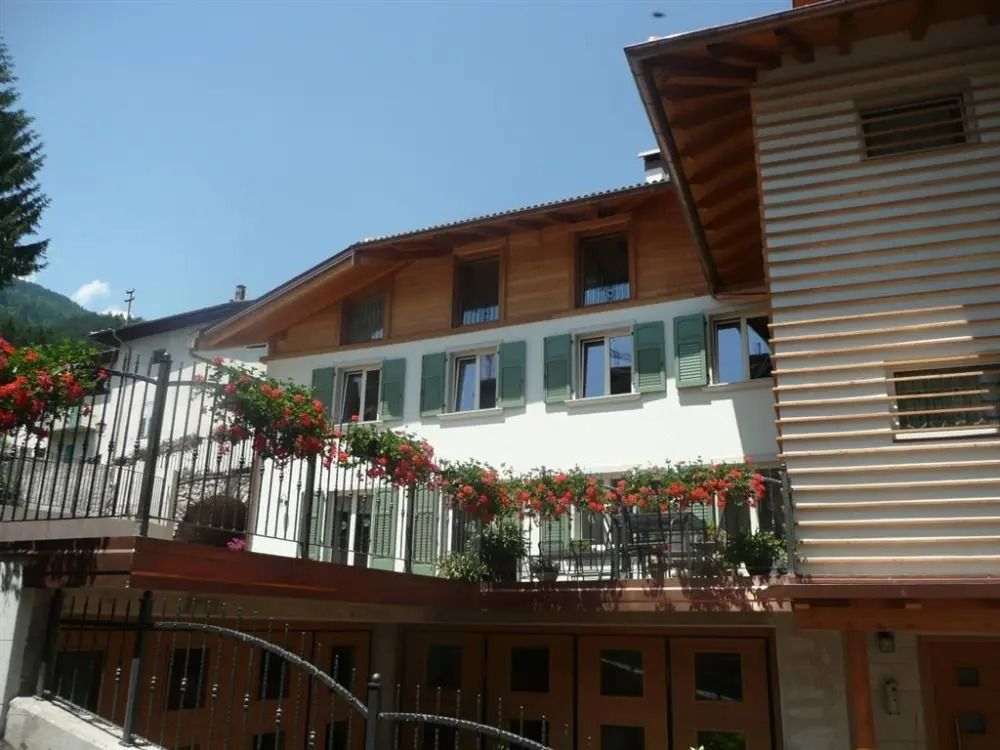
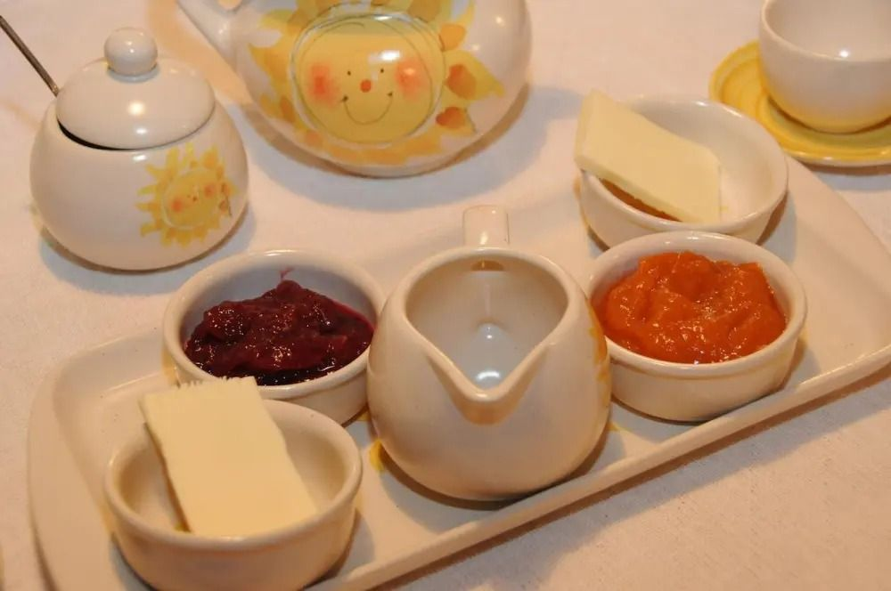
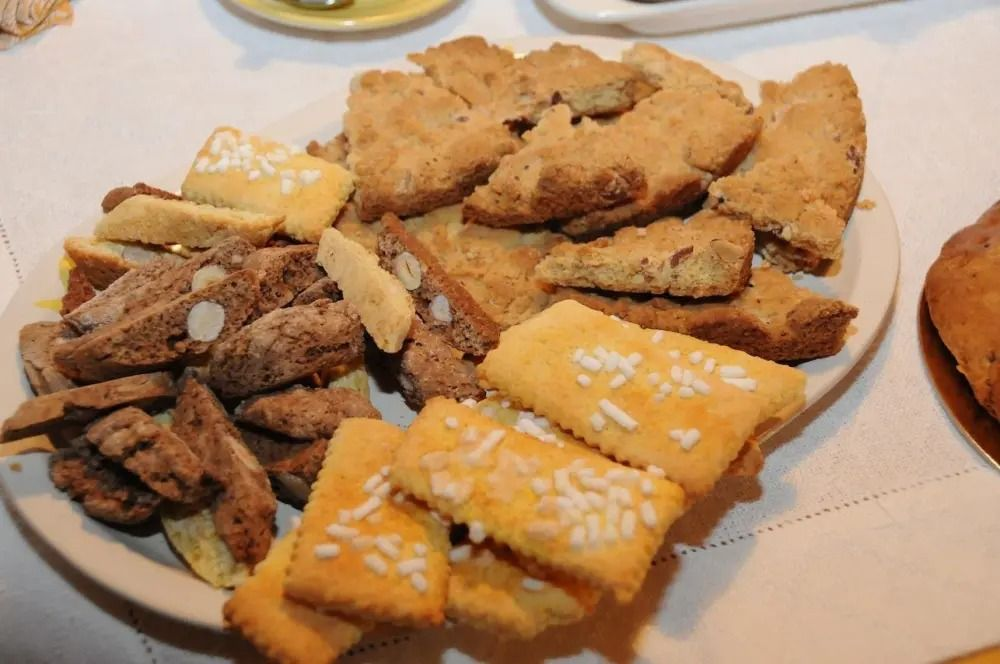
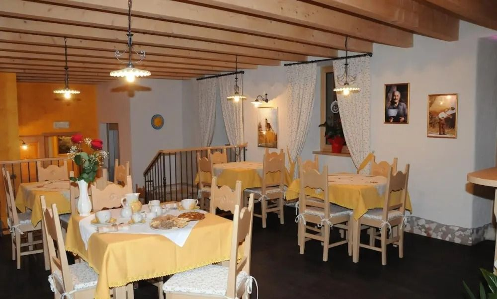
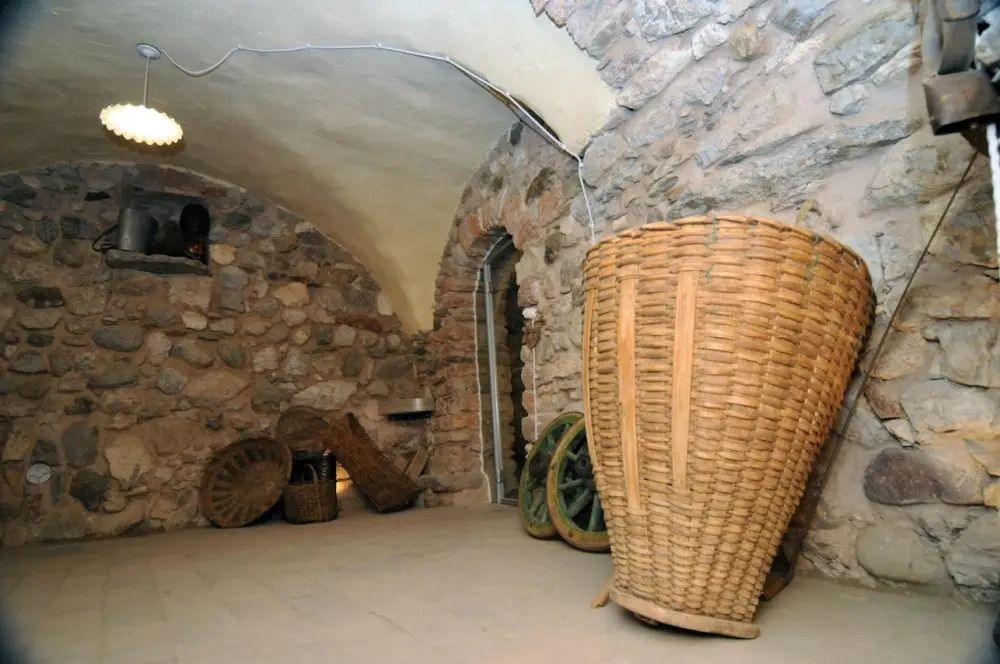
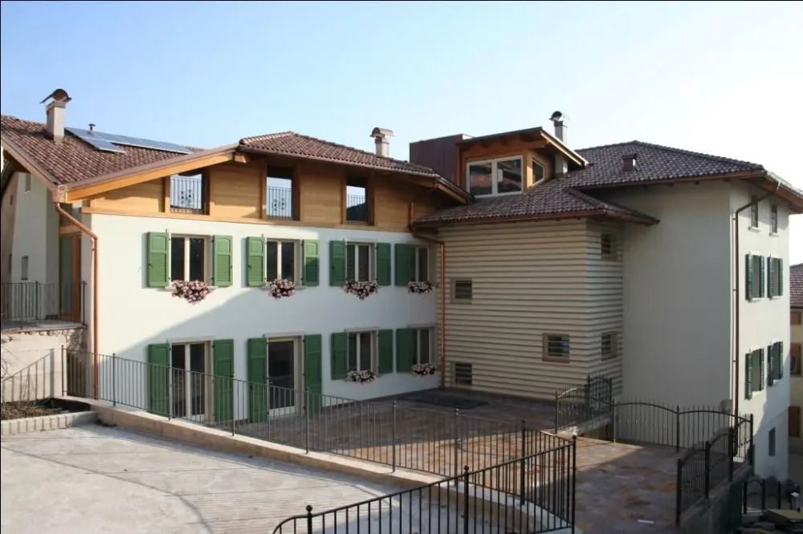

famiglia Poletti
Primo Sole
agritur · Mechel · Val di Non
«Benvenuti a tutti voi che cercate il caldo abbraccio dei primi raggi di sole del mattino che illuminano Mechel.»
Un'antica dimora rurale nel centro storico di Mechel, frazione di Cles, ristrutturata tra il 2009 e il 2011, tra i meleti e i boschi della Val di Non. La teniamo noi, la famiglia Poletti.

La colazione
L'agritur è nato da un'azienda agricola che coltiva mele Melinda: a colazione e negli assaggi ci sono i prodotti della mela, insieme a salumi, formaggi, dolci e biscotti tipici della valle e del Trentino.
La sala è ampia, col legno e i muri di pietra, e la cucina non è separata: si sta insieme.




I vòuti
Nella casa ci sono due vòuti, le cantine a volta di una volta. Nel più grande teniamo quello che facciamo in casa:
- succo di mele
- crauti
- salsicce
- salami
- speck
- marmellate
- conserve
Il più piccolo, la «Cianva», serve per conservare e per gli assaggi.
Le stanze
Spaziose, tranquille e luminose, coi pavimenti e gli arredi in legno e i colori del cielo e della natura.
- 10stanze, ognuna col suo bagno
- 21posti letto
- TVsatellitare e internet in camera
- soleil solarium, per le giornate belle
Dove siamo
Vicolo dei Ponti 15, Mechel
38023 Cles (TN)
Tel. 0463 600183
WhatsApp 340 779 2780
agriturprimosole@gmail.com
In bici? Siamo proprio sul percorso del Dolomiti Brenta Bike.
